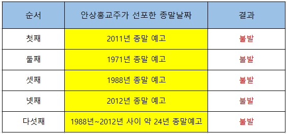
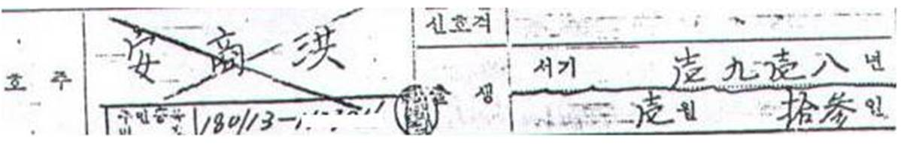
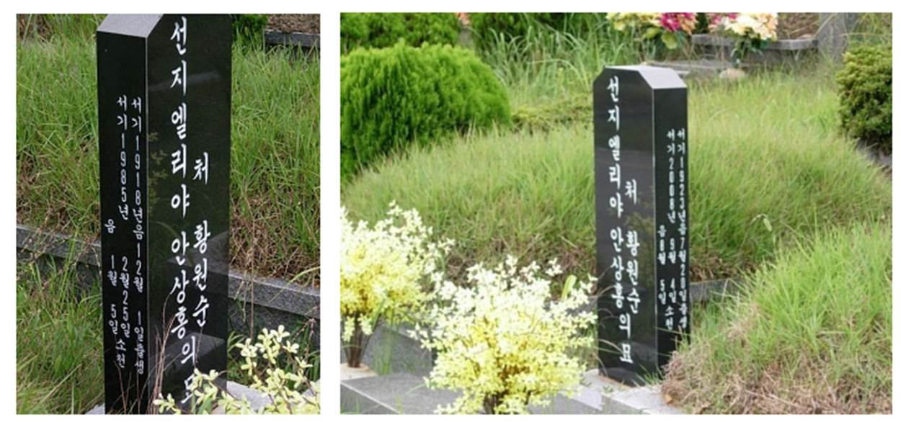
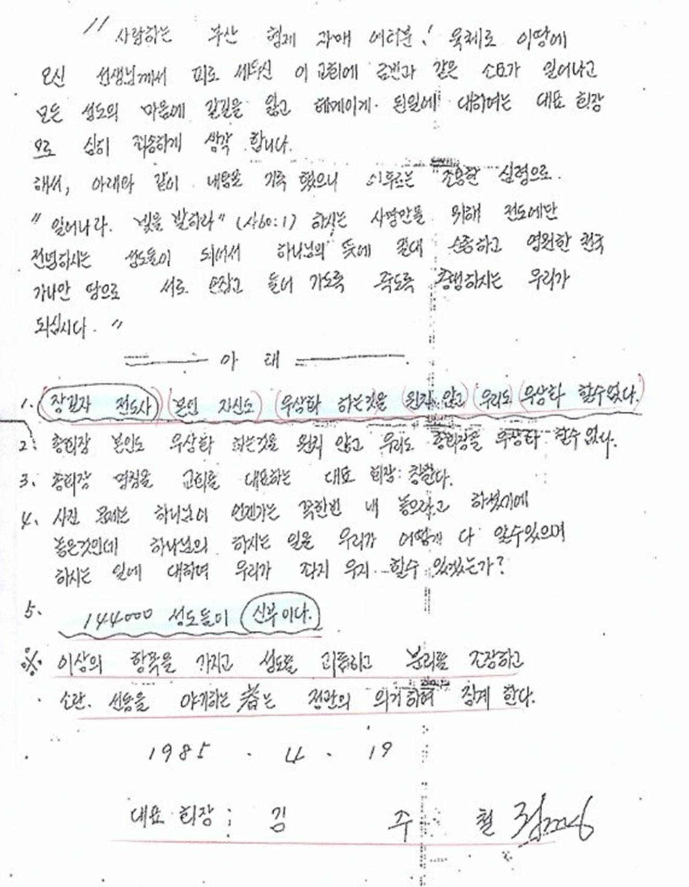

1. 하나님의교회 탄생 과정
|
순서 |
년도 및 이력 사항 |
이력에 따른 세부 내용 |
증빙자료 |
|
1 |
음력 1917년 12월 1일(양력 1918년 1월 13일) 안상홍 출생 |
전라북도 장수군 명덕리에서 출생 |
출생증명서 묘비석 |
|
2 |
1948년경 인천항 부군에서 하역 노동자로 근무. 1948년 인천 안식교 이명덕목사에게 침례를 받았다고 주장 |
안식교의 증언에 따르면 안상홍은 1948년 인천항 부근에서 하역 노동자로 일하며 매주 토요일 안식교에서 제공하는 무료 급식을 먹었다고 한다. 안상홍은 안식교 이명덕목사에게 낙섬에서 침례를 받았다고 주장하지만, 안식교에는 이명덕이라는 목사가 존재하지 않는다. 안상홍의 고향이 명덕리라는 점을 감안하면 자신의 고향 지명을 차용한 것으로 추정된다. |
안식교 증언 녹취파일 |
|
3 |
1954년 부산 해운대 안식교에서 침례를 받음 |
안식교 교적부에 따르면 안상홍 부부는 1954년 10월 9일 부산 해운대교회 김석영목사에게 침례를 받은 것으로 기록되었다. 그의 부인은 황원순으로 알려져 있으나 본명은 김움젼이라는 주장도 있다. 황원순은 첫 번째 부인의 이름이었으나 두 번째 부인이었던 김움젼이 첫 번째 부인 이름으로 살았다는 것이다. 안식교 교적부에는 안상홍과 김움젼의 주소지(부산 동래구 우동)가 동일하며 같은 날 침례를 받은 것으로 기록되었다. |
안식교 교적부 |
|
4 |
1964년 하나님의교회 설립 |
1964년 부산시 우동에 하나님의교회 설립 |
하나님의교회 홍보영상 |
|
5 |
1969년 장길자 입교 |
1969년 3월 31일 장길자는 노장로라는 사람의 전도를 통해 교회에 입교 후 자신의 남편 김재훈을 전도하였다. 이들은 집사부부로 활동하며 교회의 중추적인 역할을 하였다. |
장길자 침례명부 교회 추진회 명당 |
|
6 |
1971년 종말 선포 |
안식교 교리에 심취한 안상홍은 1971년을 종말로 선포하였다. 안식교가 세워진 1844년을 기준으로 167년이 마쳐지는 2011년에 세상이 멸망할 것이나 택한 자들을 위해 40년을 감해주셔서 1971년에 멸망한다고 주장하였다. 그러나 예고한 종말이 불발되자 자신도 안식교에 속았다며 모든 책임을 안식교에 전가하였다. |
안상홍의 친필 설교 노트 신도들의 증언 |
|
7 |
1978년 엄수인전도사 재림예수로 안상홍을 지명 |
1978년 교회 신도였던 엄수인전도사는 ‘육체로 오신 하나님’ 이라는 책을 발행하여 안상홍을 재림예수로 지명하였다. 1988년 종말 선포도 엄수인의 작품이다. |
1983년 정기총회 회의록, 엄수인의 저서 |
|
8 |
1983년 엄수인전도사 제명, 장길자부부 이혼 |
안상홍을 재림예수로 선포한 엄수인은 교회에서 신망이 높았으나 하나님의 신부를 자처하다가 1983년 3월 15일 정기총회를 통해 제명 당했다. 그해 장길자는 자신의 남편 김씨와 이혼했다. 엄수인 사건 후 안상홍은 어머니 하나님을 주장하는 자들은 정신병자라며 죽을 때까지 강하게 비판하였다. |
1983년 정기총회 회의록 판결문 |
|
9 |
1984년 안상홍과 장길자의 비밀 결혼식 |
장길자는 남편 김씨와 이혼 후 솔로가 된 상태에서 1984년 5월 18일 유부남 안상홍과 서울에서 비밀 결혼식을 울렸다. 예식장 위치에 대하여 교회 측은 명확히 밝히지 않고 있다. |
하나님의교회 정관 1985년 회의록 홍보영상 신도 증언 |
|
10 |
1985년 문공부 교회 등록추진과 안상홍의 죽음 |
안상홍은 문공부에 교회를 등록하기 위하여 개신교 신현종목사를 영업하였으나 사기를 당했다. 그가 사기를 인지한 것은 1985년 1월경이다. 사기를 당했다는 충격으로 인해 시름하던 안상홍은 2월 25일 교회에서 쓰러져 병원으로 옮겨졌으나 사망했다. |
1985년 회의록 |
|
11 |
1985년 2월 25일 안상홍 장례식 |
부산에서 진행된 장례식에는 장길자와 김주철이 참석하지 않았다. 부산교회 신도들의 증언에 따르면 김주철은 장례식이 진행되는 기간에 교회 자금 수백만원을 가져간 뒤 지금까지 돌려주지 않았다고 한다. 안상홍의 시신은 양산 석계묘지에 안치되어있다. |
장례식 사진 신도들의 증언 |
|
12 |
1985년 3월 4일 안상홍 장례식 이후 임시총회 소집 |
서울을 중심으로 세력을 구축한 김주철과 장길자는 장례가 끝나는 동시에 임시 회의를 소집하여 장길자를 어머니 하나님으로 추대한다. 고인에 대한 슬픔으로 인해 정신이 없었던 부산교회는 정신을 차린 후 장길자를 추대한 서울 교회를 강하게 비판한다. |
1985년 3월 회고록 |
|
13 |
1985년 3월 16일 김주철은 장길자를 우상화하지 않겠다며 친필로 각서 작성 |
부산교회의 강한 비판과 저항으로 인해 김주철은 장길자 전도사를 우상화하지 않겠다는 친필 각서를 작성한다. 그러나 자신은 그런 각서를 쓴 적이 없다며 부정하고 있다. 2014년 감정 결과 김주철의 친필로 확인되었다. |
김주철의 친필 각서 사본 친필 감정서 |
|
14 |
1985년 6월 하나님의교회를 설립하는 임시총회 개최 |
김주철을 주축으로 세워진 서울 교회는 부산교회와 결별 후 1985년 6월 2일 서울 동대문 답십리에서 임시총회를 소집한 후 자신들만의 교회를 설립하였다. 그리고 장길자를 어머니 하나님으로 선출하였다. |
1985년 6월 회의록 |
2. 하나님의교회 종말론 주장 이력
|
순서 |
종말 선동 및 선포 |
세부 내용 |
증거자료 |
|
1 |
1971년 종말 선포 |
안식교 신자였던 안상홍은 안식교가 세워진 1844년을 기점으로 167년이 마쳐지는 2011년에 세상이 멸망할 것이라고 신도들을 선동함. 그러나 택한 자들을 위하여 40년을 감해주셨기 때문에 2011년에서 40년을 감한 1971년이 세상 종말이 될 것이라 하였음. 모세가 십계명을 받은 뒤 167일 만에 성전을 완공했는데 두 번째 십계명을 받은 것은 1844년 안식교가 설립될 예언임. 성경은 1일을 1년으로 해석하기 때문에 안식교가 세워진 1844년부터 167년이 마쳐지는 2011년에 종말이 오지만, 택한 자들을 위해 40년을 감해주셔서 1971년이 종말이 된다고 함. 그러나 예고한 종말이 불발되자 자신도 안식교에 속았다며 모든 책임을 안식교에 전가함. |
1971년 세상이 멸망할 것이라고 기록한 안상홍의 친필 노트 |
|
2 |
1988년 종말 선포 |
하나님의교회 여신도였던 엄수인전도사는 ‘육체로 오신 하나님’ 이라는 책자를 1978년에 발행하여 안상홍을 재림예수로 증거함. 책자에 따르면 이스라엘이 독립하는 1948년부터 40년이 마쳐지는 1988년에 세상이 멸망할 것이라고 주장함. 안상홍은 엄수인의 책자를 공식 교리서로 인정하면서 이를 바탕으로 ‘하나님의 비밀과 생명수의 샘’ 이라는 책자를 발행함. 책자에 따르면 1988년에 세상 종말이 될 것이지만 더디 오신다는 예언도 있으므로 지체될 수 있다고 함. 그러나 2012년은 넘기지 않을 것이라고 주장함. 1985년 안상홍 급사 후 그의 후계자를 자처하는 김주철에 의해 안상홍의 종말 주장이 실행됨. 1988년 종말이 불발된 후 김주철은 종말이 다소 지연되었다며 신도들을 농락함. |
엄수인의 저서 ‘육체로 오신 하나님’ 책자 안상홍의 저서 ‘하나님의 비밀과 생명수의 샘’ 책자 1988년 종말 전단지 |
|
3 |
144000명 구원 |
안상홍뿐만 아니라 안상홍의 후계자를 자처한 김주철도 144000명만 구원을 받는다는 교리를 설파함. 그러나 침례 인원이 144000명을 넘기자 유월절을 지키는 인원으로 변경하였고 이 또한 초과되자 안식일 예배를 온전히 지키는 인원으로 기준을 재차 변경하여 신도들을 농락함. |
하나님의교회 서열 7위였던 김정욱목사의 게시글 |
|
4 |
1999년 종말 선포 |
안상홍교주는 안식교가 세워진 1844년부터 168년이 마쳐지는 2012년에 세상이 멸망할 것이라고 주장함. 1971년 종말을 선포할 때에는 167년이 마쳐지는 2011년에 종말이 될 것이라고 하였으나, 모세가 성전을 완공하기까지의 시간을 일출 기준으로 다시 계산하면서 168일로 수정됨. 안상홍은 1988년부터 종말이 지체되지만 2012년을 넘기지 않을 것이라고 주장함. 이에 따라 김주철은 1988년을 기준으로 12년, 2012년을 기준으로 앞으로 12년을 계산하여 2000년을 종말의 해로 선포함. 당시 Y2K 컴퓨터 오작동으로 인한 핵전쟁의 분위기가 나오자 여기에 편승하여 종말을 대대적으로 선동함. |
하나님의교회의 종말론을 보도한 MBC 피디수첩 SBS 사건과 사람들 |
|
5 |
1억 8천만명을 구원하는 소금교리 선포 |
예고한 종말이 불발되고 침례인원이 50만명을 초과하자 김주철은 1억 8천만명을 구원하자는 소금 교리를 선포함. 성경을 보면 하나님의 백성들은 소금으로 비유되고 있고 인류인생은 바다로 비유되어 있는데 바다에서 소금이 차지하는 비율이 3%임. 세계 인구 60억 중 소금으로 비유된 하나님의 백성들이 3%에 해당하기 때문에 1억 8천만명을 구원해야 한다고 주장함. |
소금교리와 관련된 탈퇴 신도의 게시글 |
|
6 |
2012년 종말 선포 |
안상홍은 안식교가 세워진 1844년부터 168년이 마쳐지는 2012년에 세상이 멸망할 것이라며 종말을 선포함. 이에 따라 앞선 1988년과 1999년의 종말이 불발된 이후에는 신도에 동요하지 않고 2012년을 기다림. 그러나 종말이 불발되자 김주철은 종말이 또 지연되었다고 신도들을 농락함. |
1988, 1999, 2012년에 종말을 외쳤다고 명시된 법원 판결문 |
|
7 |
준공검사 선포 |
안상홍이 예언한 대로 2012년에 천국이 완성되었으나 준공검사 승인이 안나서 입주가 다소 지연되고 있다며 신도들을 농락함. |
준공검사와 관련한 하나님의교회 탈퇴 신도의 게시글 |
|
8 |
2014년 희년 선포 |
희년은 50년마다 한 번씩 맞이하는 절기인데 하나님은 이날을 택하여 포로된 자들을 고향으로 돌려보낸다고 함. 1964년에 설립된 하나님의교회는 2014년에 창립 50주년을 맞이했는데 이는 희년의 기한과 일치함. 교회 측은 2014년 1월 1일 자정, 신도 1만 명을 옥천 연수원에 소집 후 청사초롱을 들게하여 신부가 신랑을 맞이하는 천국 혼인 잔치 행사를 연상케 함. 대다수 신도들은 희년에 맞추어 천국에 갈 것으로 예상했으나 이 또한 불발됨. |
하나님의교회 희년 관련 언론보도 |
|
9 |
70억 전도 선포 |
예고한 모든 종말이 불발되자 자포자기한 김주철은 전 세계 모든 인구를 구원해야 한다며 70억 전도를 선포함. 신도들은 김주철의 농간에 현혹되어 정신을 못차림. |
70억 전도를 선포한 관련 게시글 |
|
10 |
현재 |
김주철과 하나님의교회 총회는 자신들은 종말을 외친 적이 없다고 주장함. 하나님의교회 피해자 단체가 교회 측의 종말 사기를 비판하자 자신들은 종말을 외친 적이 없다며 명예훼손으로 소송을 제기했으나 모두 패소함. |
1988, 1999, 2012년에 종말을 외쳤다고 명시된 법원 판결문 |
3. 1988년 1999년 2012년 하나님의교회 종말관련 법원 판결문
하나님의교회는 1988년부터 2012년까지 종말 기간을 설정하여 신도들의 재산을 갈취하였습니다. 하나님의교회와 김주철이 종말을 외친 것은 자신들의 교주인 안상홍의 교리에 심취했기 때문입니다. 안식교 신자였던 안상홍은 안식교 교리에 심취하여 2011년을 종말로 선포했으나 하나님이 택한 자들을 위해 40년을 감해주셨다고 주장하여 1971년을 종말로 선포하였습니다. 그러나 예고된 종말이 불발되자 모든 책임을 안식교에게 전가하고 새로운 기회를 엿보던 중 자신의 소속교회 신도였던 엄수인 전도사의 종말 교리에 심취하여 1988년을 종말로 선포하였습니다.
엄수인전도사는 ‘육체로 오신 하나님’이라는 책을 통해 재림예수는 예수께서 못다 이룬 37년 복음을 전파하여 40년을 완성할 것이며 복음이 마쳐지는 70세의 나이에 세상 종말과 함께 하늘로 승천할 것이라고 주장했는데 그때가 1988년입니다. 이에 안상홍은 엄수인의 교리를 인용하여 1988년 종말을 선포했던 것입니다. 그러나 종말이 더디 온다는 하박국서의 말씀을 인용하여 1988년부터 더디 오시는 시기로 정하고 성전 건축이 완성되는 2012년을 최후의 종말 날짜로 설정하여 1988년부터 2012년까지 약 24년을 종말 기간으로 선포한 것입니다.

그림 안상홍의 종말 선포 횟수와 날짜, 결과
4. 하나님의교회 신도의 집단 범죄 이력
|
순서 |
년도 |
사건 내용 |
세부 내용 |
증거 자료 |
|
1 |
1999년 방송국 포위 사건 |
하나님의교회의 시한부 종말론과 아동학대, 이혼, 가출, 재산헌납 등의 문제가 MBC 피디수첩과 KBS 추적 60분, SBS 사건과 사람들을 통해 알려지자 하나님의교회 신도 수만명이 추가 방송을 저지하기 위하여 방송국 주변을 점거한 사건 |
하나님의교회는 각 교회에 공문을 보내어 부녀들을 동원하여 방송국에 항의 전화를 조장함. 해당 사건은 언론을 통해 대대적으로 보도됨. |
하나님의교회가 각 당회에 보낸 공문서 SBS 사건과 사람들 MBC 피디수첩 방송영상 |
|
2 |
1999년 탈퇴자 집단 테러 사건 |
대구지역에 있던 하나님의교회 신도 500여명이 교회를 탈퇴 후 교회의 비리와 종말사기를 비판하자 하나님의교회 신도 수백명이 동원되어 탈퇴자들을 조직적으로 테러한 사건. MBC 뉴스 보도에 따르면 수일을 간격으로 최소 7건 이상의 테러 사건이 발생됨. |
테러에 가담한 일부 신도들은 현장에서 검거되어 1년의 실형을 선고 받고 교도소에 수감됨. 사건 현장에 있었던 4살짜리 아이는 청테이프로 입막음을 당한 뒤 엄마가 폭행 당하는 장면을 1시간 동안 지켜봄. |
MBC 뉴스 영상 |
|
3 |
2000년 탈퇴 여성 집단 폭행 사건 |
하나님의교회 신도였던 정모 여인이 교회를 탈퇴 후 하나님의교회의 종말 사기와 사이비교리를 비판하자 하나님의교회 여성 신도 수백명이 정씨가 운영하는 수유리 비디오 가게를 점거한 후 정씨를 집단 폭행한 사건. 당씨 정씨는 얼굴을 알아볼 수 없을 정도로 치명상을 입었다고 함. 정씨의 남편이 옆에 있었으나 흥분한 신도들을 말 수 없었다고 함. |
사건에 가담했던 탈퇴자 A씨는 당시의 사건으로 인해 자신도 큰 충격을 받았으며 사람이 이렇게 죽는구나라고 생각되어 죽음에 대한 트라우마가 생겼다고 함. 가해자 A씨는 정씨를 만나 용서를 빌고 싶다고 자신의 심정을 전함. |
수유리 비디오 가게 탈퇴 여신도 집단 폭행 사건 기독신문 언론보도 |
|
4 |
2010년 컬투쇼 집단 항의 사건 |
2010년 11월 16일 컬투쇼라는 라디오 방송에서 시청자 사연을 전했는데 그 과정에서 하나님의교회가 특정되었다며 신도들이 집단으로 항의한 사건. |
2010년 11월 23일 신도들은 컬투쇼에 항의하기 위해 방송이 진행되는 2시간 동안 사과를 하라며 일 만개의 댓글을 게시했고 같은 날 목동 SBS 방송국에 결집하여 항의함. |
이데일리 언론보도 ‘두시탈출 컬투, 종교 비하 발언 사과’ |
|
5 |
2010년 동아일보 포위 사건 |
동아일보가 하나님의교회의 종말 사건을 보도하자 하나님의교회가 신도 수천명을 동원하여 광화문에 있는 동아일보 사옥을 10일 넘도록 둘러싼 사건. |
탈퇴 목사의 증언에 따르면 시위가 진행되는 동안 하나님의교회 총회는 대책을 마련하기 위해 날마다 회의를 진행했다고 함. |
탈퇴 목사의 증언 |
|
6 |
2014년 피해자 단체 소송 테러 사건 |
하나님의교회 피해자 모임(하피모) 회원들이 하나님의교회와 종말 사기와 교리를 시위를 통해 비판하자 교회측이 피해자들을 상대로 150건이 넘는 민⦁형사 소송을 제기한 사건 |
하나님의교회는 KCL, 세종, LKB파트너스 등 대형 로펌들을 선임하여 소송을 제기하였으나 대다수 패소함. 소송에 따른 판결로 인해 하나님의교회는 종교 사기 집으로 낙인찍힘. |
하나님의교회 소송테러 사건 언론보도 |
|
7 |
2016년 원주시청 전화 테러 |
원주 지역의 하나님의교회가 LH 사옥을 매입 후 증축을 시도했으나 서류 부적격과 원주 시민들의 반대로 인해 시청의 허가가 나지 않자 2016년 5월 30일~7월 30일까지 신도들을 동원하여 원주시청에 전화로 테러를 가한 사건. |
하루 최대 17만 건의 항의 전화로 인해 시청의 업무가 마비됨 |
원주시청 전화테러 언론보도와 교회측이 신도들에게 보낸 문자 |
5. 안상홍의 사망
⦁ 안상홍의 호적 등본과 묘비석

그림 안상홍의 호적 등본

그림 안상홍의 묘비(1985년 사망) 부인 황*순씨의 묘비 (2008년 사망)
안상홍의 부인 황*순씨가 2008년 9월 4일에 사망하여 안상홍과 함께 묻히고 묘비를 같이 씀
6. 하나님의교회 김주철의 행적과 반론 교리
⦁ 장길자를 하나님으로 세우지 않겠다고 서약한 김주철의 친필 각서
1985년 안상홍 급사 후 김주철과 그의 추종자들은 교회의 분열을 막기 위하여 장길자를 어머니 하나님으로 추대합니다. 그러나 부산에 있던 신도들의 반발로 인하여 김주철은 장길자 전도사를 우상화하지 않겠다는 사죄의 각서를 친필로 작성합니다.

그림 1985년 김주철 친필 각서
이후 문제의 각서가 인터넷을 통해 유포되면서 김주철은 많은 비판을 받았습니다. 자신의 목숨과도 바꿀 수 없다던 장길자를 신도들의 비판이 두려워 하나님으로 인정하지 않겠다며 친필로 각서를 썼다는 사실에 신도들은 크게 실망하여 교회를 떠났던 것입니다.